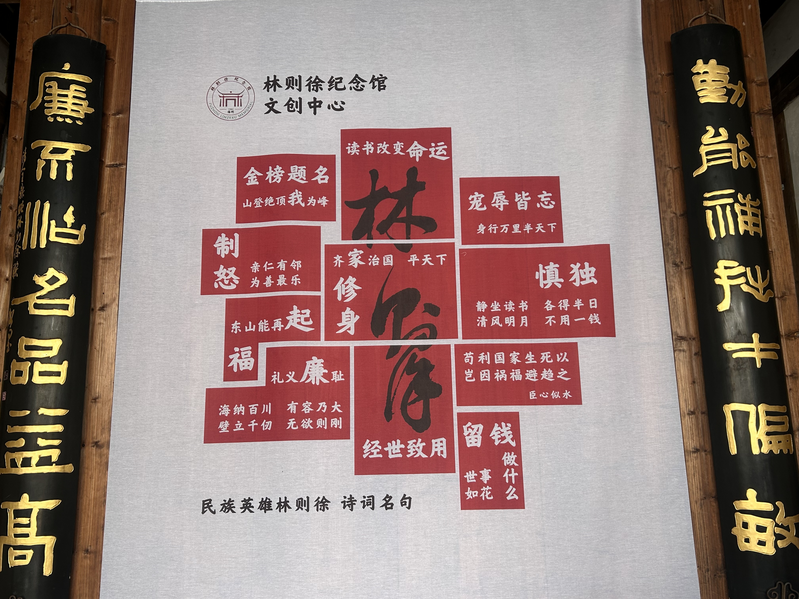
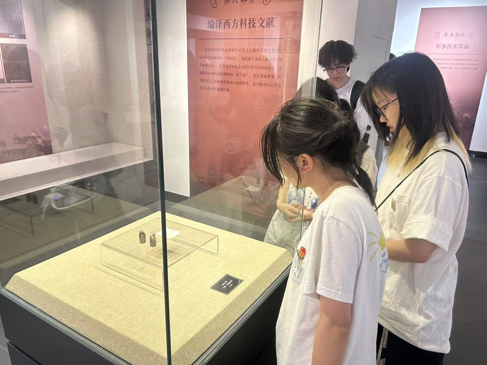

以"码"为媒续薪火，计科学子探红途
暑期三下乡红色教育基地参观纪实
福建省革命历史纪念馆
Day1: 2025.7.3
坐标:福建省革命历史纪念馆
6人小分队整装出发!清晨8点准时集结,携带团徽与校徽,怀揣敬意开启红色研学之旅。在纪念馆专业讲解牌与学习导览带领下,我们沉浸式学习了福建革命史:从《闽山闽水物华新》主题展到中央苏区创建历程,每一件文物都在诉说峥嵘岁月,每一幅照片都镌刻着热血信仰。


"通过数字技术重现革命历史,我们深刻体会到'科技为民,代码报国'的时代使命。作为计科学子,既要精进算法,更要让技术创新成为传承红色基因的新载体!"
林则徐纪念馆
Day2: 2025.7.4
坐标:林则徐纪念馆
6人小分队继续前行！上午9点抵达纪念馆，通过数字化展陈技术，深入了解民族英雄林则徐的生平事迹与爱国精神。从虎门销烟壮举到治理水利的智慧，我们深刻感受到科技与人文的融合力量。



"通过编程再现历史场景，我们领悟到'科技传承文化，代码弘扬精神'的深刻意义。作为计科学子，既要掌握前沿技术，更要让数字技术成为传播中华优秀传统文化的新桥梁!"